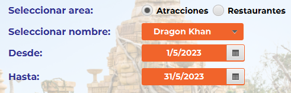

¡Visualiza los horarios de tu zona!
Sigue estos pasos para poder visualizar los horarios y empleados
En esta pantalla podrás ver todos los horarios de una zona específica durante un período que selecciones con los empleados que estén asignados.
1. Seguir los 2 primeros pasos de la pantalla Crear

En este paso repetimos los 2 primeros pasos del apartado crear. De forma resumida primero tendrás que seleccionar el area de trabajo y luego la zona deseada.
2. Seleccionarar las fechas
Deberás seleccionar 2 fechas que comprenderán el periodo en el cual quieres visualizar todos los horarios de esa zona. Debes indicar el periodo "Desde" que tiene que ser anterior a "Hasta", sino tendrás un aviso del programa indicando que modifiques las fechas. Cuanto más preciso sea el periodo, más fácil será identificar los horarios que quieres viualizar.
3. Buscar
Una vez tengas las fechas seleccionadas, ya podrás clicar el botón buscar.
4. Visualizar
Cuando hayas completado el tercer paso, ya podrás visualizar la lista de todos los horarios que comprenden ese periodo ordenados por fecha. La lista indicará el horario en formato texto, los nombres de los empleados asignados y si no hay asignaciones, verás sólo el horario correspondiente. En caso que durante ese periodo no haya ningún horario creado, aparecerá un texto diciendo que no hay horarios asignados.
¡Ya puedes visualizar todos los horarios de una forma ordenada y clara! Si quieres hacer cambios en la asignación de los horarios, recuerda que puedes hacerlo en la pantalla de "Asignar".